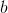
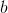
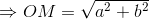

Reprezentarea grafică a unui număr complex
Reprezentarea grafică a unui număr complex este capitolul ghidului nostru - Numere complexe, care ne arată cum putem reprezenta un număr complex dat,  , într-un sistem de axe ortogonale (sau sistem cartezian)
, într-un sistem de axe ortogonale (sau sistem cartezian)  .
.
Apoi se observă legătura dintre segmentul care unește originea sistemului cartezian considerat cu afixul numărului complex și modulul unui număr complex.
În continuare, se reprezintă grafic 4 numere complexe și se observă că imaginea fiecărui număr dat se reprezintă în cadrane diferite, iar în final se dă un tabel ce conține condițiile pentru ca imaginea geometrică a unui număr complex să aparțină unui anumit cadran.
Cu siguranță ai învățat încă din clasele mai mici că numerele reale se pot reprezenta pe o axă. Ca să îți amintești mai bine, se ia o dreapta d pe care fixăm o origine O, luăm un sens de parcurgere și o unitate de masură.
Exemplu:
În imaginea de mai jos se poate observa reprezentarea numărului 2.

Am văzut în primul capitol al acestui ghid că un număr complex are forma algebrică , fiind determinat de două numere reale  și .
și .
De aceea vom reprezenta geometric numerele complexe prin punctele unui plan în care fixăm sistem de două axe ortogonale, adică perpendinculare.
Fie sistemul de axe ortogonale .

Punctul din reperul ortogonal se numește imaginea geometrică a numărului complex , iar  este afixul punctului
este afixul punctului  .
.
Partea reală a numărului complex , adică , se reprezintă pe axa orizontală, iar coeficientul părții imaginare se reprezintă pe axa verticală.
Dacă unim punctele (originea) cu imaginea geometrică a numărului complex , adică punctul , putem observa faptul că se formează un triunghi dreptunghic , unde  este punctul de coordonate .
este punctul de coordonate .

Aplicând Teorema lui Pitagora în triunghiul dreptunghic , obținem:

.
Așadar, distanța de la originea reperului cartezian considerat și punctul coincide cu modulul numărului complex dat.
Exemplu:
Să se reprezinte grafic următoarele numere complexe și să se calculeze distanța de la originea reperului cartezian la imaginea geometrică a fiecărui număr dat:
 ;
;
;
 ;
;
.
Rezolvare:
Calculăm .
În reperul cartezian de mai jos găsiți reprezentarea grafică a celor patru numerele complexe date.

Se observă că puntele  și
și  se află în cadrane diferite ale reperului cartezian .
se află în cadrane diferite ale reperului cartezian .
Punctul se află în cadranul  și vom nota .
și vom nota .
Punctul  se găsește în cadranul
se găsește în cadranul  și vom nota .
și vom nota .
Punctul  este situat în cadranul
este situat în cadranul  și vom nota .
și vom nota .
Punctul se localizează în cadranul și vom nota .
Imaginea de mai jos conține reprezentarea numerelor complexe date în enunț și cadranele corespunzătoare imaginilor geometrice ale acestora.

Ca o generalizare, cu ajutorul tabelului de mai jos veți putea preciza dinainte în ce cadran se va afla imaginea geometrică a unui număr complex, în funcție de numerele reale și .